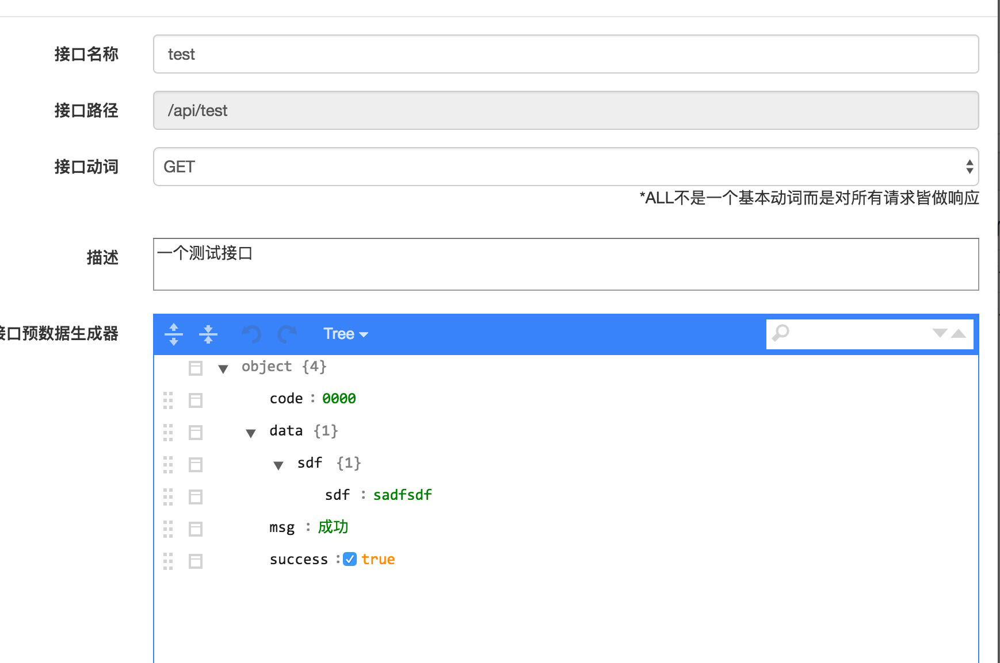

介绍：
mock测试就是在测试过程中，对于某些不容易构造或者不容易获取的对象，用一个虚拟的对象来创建以便测试的测试方法。
现阶段开发流程的问题：
项目启动：
- 前后端需求评审。
- 测试提供测试用例，然后进行评审。
- 后端和前端各自进行开发。
- 进行联调。
主要时间在前后端开发的时间，其次在于联调时间，其中，比较坑的问题出现了：
- 前端同学开发进度大于后端的同事。
- 后端同事为了自己方便修改了接口、接口返回数据、接口数据格式。
- 后端服务部署问题，不能提供服务。
等一系列问题，那前端就只能干瞪眼了，我不知道除了‘等服务，等接口，等接口数据’还能做什么？？？ 所以，就会出现一系列‘扯皮’的交流方式。
mock能做什么？
mock系统，虽然不能制止‘扯皮’出现，起码能减少’扯皮’的问题出现，主要减少前后端联调的时间，解决前端‘干瞪眼‘的问题。
使用步骤：
前提假设已经拥有mock账户，如果没有的话请访问：http://10.152.16.9:3000/mock/management/进行注册。
起步：
- 页面中点击api管理，会看到《开发数据设置》的按钮，点击会出现以下管理页面。
- 鼠标滑过最后修改时间，出现《添加接口》按钮，出现以下弹窗 。
- 
到此为止访问次接口，就能拿到你想要的数据了。
当然，你以为这就完了吗，当然不是，生成数据还可以进行变形，写入正则表达式，请看以下情况：
如果你喜欢正则表达式，那你有福了，但是，不熟悉正则表达式的小伙伴也有福了，可以愉快的进行数据联调，当然，最终要的是，可以在这里学习、练习正则表达式，何乐而不为呢？